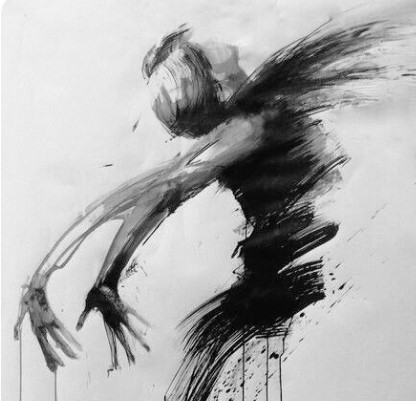
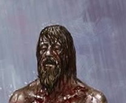

Latent darkness, ever present in its bearer
Tier 1: Loss of ControlThere is nothing... nothing... nothing...The red haired man wakes up in cold sweat on his bed of hay inside a cheap inn next to the cordon of the Spires. Visions of slaughter and him laughing manically as the bodies drop around him. All of them will die, all of them will pay for the injustices they commit, and out of the bloody fog he alone will emerge, a benevolent ruler, a god who the meek will her towards in search of salvation. A god who the cruel will fear, for drawing his ire is a sign of sure demise. Him! Him! Him! Roxxie stands up, his hands shaking still in a bout of mercurial despair. He sees his silhouette splitting, as if there is something attempting to emerge from his skin. With considerable effort, he pushes the urge down, deep into the shackles he has built around it, that strangle both beast and man. As the tremors subside, Roxxie walks to the window, looking at the edge of the world. Soon he will be far from here, far from the shame of his past. |
|
 Shape of vengeanceAt the start of every turn, Roxxie rolls a Wisdom saving throw against a DC of 1 (this ability is excluded from the nat 1 rules, and you cant purposely fail it), if he fails, he unleashes something, simply referred to as Revengeance (stats listed below).The DC is increased by 1 per every saving throw failed, damage equal to your character level taken or dealt, fails on saving throws against your spells and/or abilities and any loss of control effects applied (aka grappled, restrain, incapacitated, charmed, frightened, paralyzed, stunned). Upon unleashing the Revengeance the can stay in this state for up to 1 minute. Every turn you are affected by it you take 1 damage doubling at the start of every subsequent turn. Upon leaving the state you gain a point of exhaustion. Your body cannot die while the Revengeance is active. Revengeance AC 4+(your level) HP 20 times your level Speed 45 (Cannot go further than 60 feet away from the body of Roxxie, although he can carry it) Str (Your stats)+ your level Dex (Your stats)+your level Con (Your stats)+your level Int (Your stats) Wis (Your stats) Cha (Your stats) Resistances and immunities: Immune to charms, sleep, Fears and dominations. Resistant to all damage. Abilities Slash of darkness (2) (Action) Slashes the target for 1d6(*your level) in necrotic damage. Its to hit bonus is equal to your level. Droplets of mercurial agony (Bonus action) Sprays droplets in a 90 foot cone, dealing 1d6 damage to all characters caught in its path. Vindictive arcanum (Bonus Action) Casts a spell from Roxxies spell list with a cast time of 1 action or 1 bonus action. |
 Supressed Vitality of revengeOnce the Revengence has been freed, it is docile for the next day, and will not force Roxxie to make saving throws. The saving throw is reset to 1. |